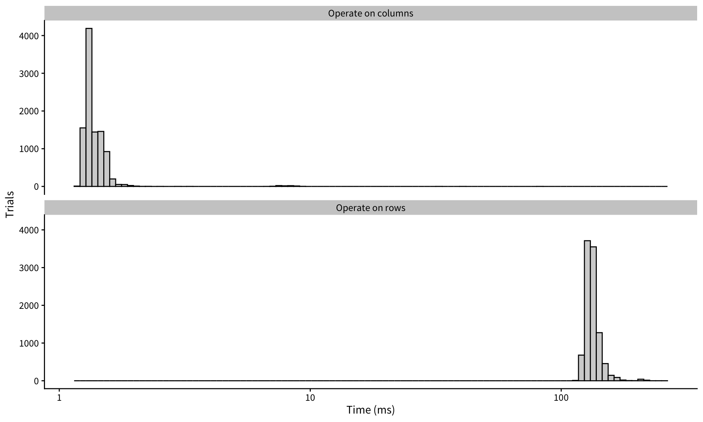

# This package lets us look at the representation of R objects
library(lobstr)
# Allow inclusion of documentation in Quarto
library(printr)
# Precise timing of functions
library(bench)
library(tidyverse)
# Set global ggplot theme
theme_set(cowplot::theme_cowplot(font_size=12,
font_family = "Source Sans Pro"))2 Names and values
Notes on Advanced R (2nd Ed)
An object is different than it’s name.
2.1 Quiz
2.1.1 Q1
Given the following data frame, how do I create a new column called “3” that contains the sum of 1 and 2? You may only use $, not [[. What makes 1, 2, and 3 challenging as variable names?
df <- data.frame(runif(3), runif(3))
names(df) <- c(1, 2)2.1.2 Solution
You need to use backticks to specify non-standard column names.
df$`3` <- df$`1` + df$`2`
df| 1 | 2 | 3 |
|---|---|---|
| 0.2784256 | 0.4897584 | 0.7681840 |
| 0.5630199 | 0.9345367 | 1.4975566 |
| 0.4917291 | 0.2493742 | 0.7411033 |
2.1.3 Q2
In the following code, how much memory does y occupy?
2.1.4 Solution
TBD
2.1.5 Q3
On which line does a get copied in the following example?
a <- c(1, 5, 3, 2)
b <- a
b[[1]] <- 102.1.6 Solution
TBD
2.2 Chapter Notes
2.2.1 Difference between names and values
What happens when we create x?
x <- c(1, 2, 3)- A vector
(1,2,3)is created. - A name
xis created, which points to the above vector.
Now what if we assign x to a new variable?
y <- xDoes the original vector get copied (i.e., are we now effectively storing 6 numbers)? No, we are still only storing 3 numbers because y and x are pointing to the same underlying object.
Here’s how we can verify that this is true:
2.2.2 What are valid names?
A syntactic name must consist of letters, digits,
.and_but can’t begin with_or a digit. Additionally, you can’t use any of the reserved words likeTRUE,NULL,if, andfunction(see the complete list in?Reserved).
Expand to read full rules on syntactic names
?make.names| make.names | R Documentation |
Make Syntactically Valid Names
Description
Make syntactically valid names out of character vectors.
Usage
make.names(names, unique = FALSE, allow_ = TRUE)
Arguments
names |
character vector to be coerced to syntactically valid names. This is coerced to character if necessary. |
unique |
logical; if |
allow_ |
logical. For compatibility with R prior to 1.9.0. |
Details
A syntactically valid name consists of letters, numbers and the dot or
underline characters and starts with a letter or the dot not followed
by a number. Names such as ".2way" are not valid, and neither
are the reserved words.
The definition of a letter depends on the current locale, but only ASCII digits are considered to be digits.
The character "X" is prepended if necessary.
All invalid characters are translated to ".". A missing value
is translated to "NA". Names which match R keywords have a dot
appended to them. Duplicated values are altered by
make.unique.
Value
A character vector of same length as names with each changed to
a syntactically valid name, in the current locale's encoding.
Warning
Some OSes, notably FreeBSD, report extremely incorrect information about which characters are alphabetic in some locales (typically, all multi-byte locales including UTF-8 locales). However, R provides substitutes on Windows, macOS and AIX.
Note
Prior to R version 1.9.0, underscores were not valid in variable names,
and code that relies on them being converted to dots will no longer
work. Use allow_ = FALSE for back-compatibility.
allow_ = FALSE is also useful when creating names for export to
applications which do not allow underline in names (for example,
S-PLUS and some DBMSes).
See Also
make.unique,
names,
character,
data.frame.
Examples
make.names(c("a and b", "a-and-b"), unique = TRUE)
# "a.and.b" "a.and.b.1"
make.names(c("a and b", "a_and_b"), unique = TRUE)
# "a.and.b" "a_and_b"
make.names(c("a and b", "a_and_b"), unique = TRUE, allow_ = FALSE)
# "a.and.b" "a.and.b.1"
make.names(c("", "X"), unique = TRUE)
# "X.1" "X" currently; R up to 3.0.2 gave "X" "X.1"
state.name[make.names(state.name) != state.name] # those 10 with a space
Expand to read the
Reserved documentation
?Reserved| Reserved | R Documentation |
Reserved Words in R
Description
The reserved words in R's parser are
if else repeat while
function for in
next break
TRUE FALSE NULL
Inf NaN
NA NA_integer_ NA_real_
NA_complex_ NA_character_
... and ..1, ..2 etc, which are used to refer to
arguments passed down from a calling function, see ....
Details
Reserved words outside quotes are always parsed to be
references to the objects linked to in the ‘Description’, and
hence they are not allowed as syntactic names (see
make.names). They are allowed as non-syntactic
names, e.g. inside backtick quotes.
However, you can circumvent these rules by using backticks.
# Note that this leaves the reserved keyword "if" untouched
# since if and `if` are different
`if` <- 102.2.3 Copy-on-modify
R objects are only copied when they need to be. This saves memory.
For example,
x <- 17
y <- xAt first, x and y point to the same object. Now we modify x. When we do this, the object that holds the number 17 is copied so that x and y have seperate objects that they point to.
x <- x*22.2.4 Columns vs Rows
The copy-on-modify behavior of R has implication for speed when operating on columns of a data frame vs. the rows.
bench::mark(`Operate on rows` = f1(),
`Operate on columns` = f2(),
iterations = 1e4,
time_unit = "ms") %>%
mutate(expression = as.character(expression)) %>%
unnest_longer(time) %>%
mutate(time = as.numeric(time) * 1000) %>%
ggplot() +
aes(x=time) +
geom_histogram(bins=100, color="black", fill="lightgray") +
scale_x_log10() +
facet_wrap(~expression, nrow = 2) +
labs(x = "Time (ms)",
y = "Trials")